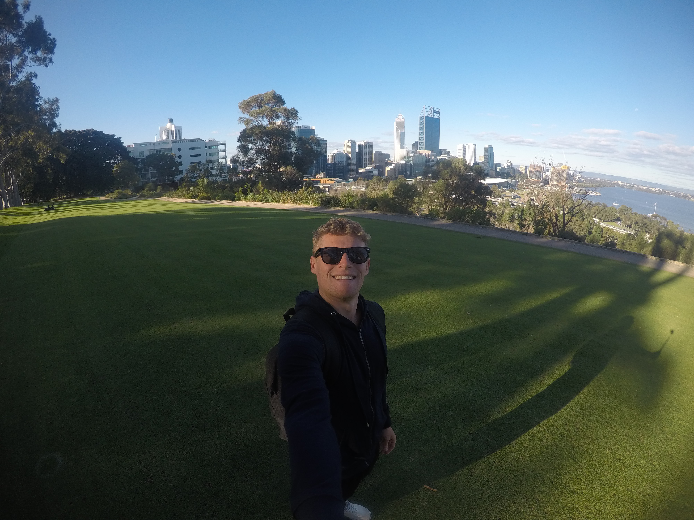

A Bit About Me...
From Telford, England but currently living on Vancouver Island, Canada! Fun-loving, positive minded lad who has just began his journey in the tech industry.
I am a very active person with a growing list of hobbies! These include my main passions of Football (or Soccer for those weirdos out there) and Skiing. Other hobbies include Fishing, Motor Mechanics and i suppose you could now say coding!
I decided to begin learning code mainly to challenge myself and to develop a new set of skills. I don’t know what i am expecting to achieve further down the road but the more I learn, the more I am attracted to the prospect of one day working in the tech industry.
Please check out my Experience page for more info on my background and work experience!
Goals...
I want to master the process of building web sites and increase my knowledge, skills and abilities in:
- HTML
- CSS
- JavaScript
- Ruby
- Rails
I’d like to continue my tech journey by carrying on my studies with Team Treehouse whilst continuing to expand my portfolio.

Please feel free to check out my GitHub page below for future projects!